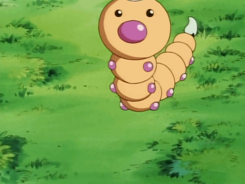
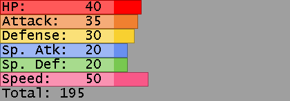
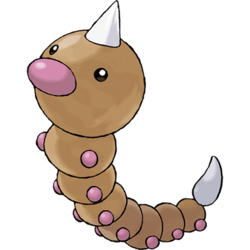
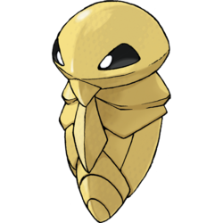
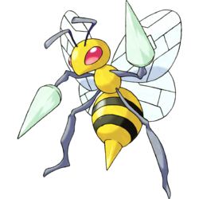

Weedle



Weedle ビードル (Beedle) es un Pokémon de tipo bicho y veneno introducido en la primera generación.Su nombre proviene de "wee", "pequeñito" en inglés (aunque esta palabra solo adopta este significado en Escocia e Irlanda, teniendo en otros países un significado diferente) y "needle", "aguja" en inglés. No obstante, también es posible que sea un acrónimo de worm (gusano) y needle (aguja), o de weevil (gorgojo) y needle. El nombre japonés Beedle es un acrónimo de las palabras inglesas bee (abeja) y needle.

Weedle Evoluciona l nivel 7 a Kakuna y al nivel 10 a Beedrill
 